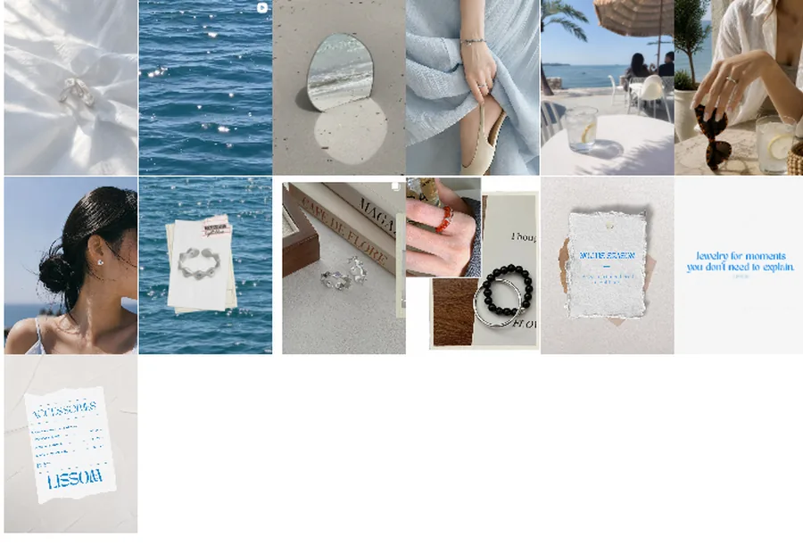
↗01 · Brand / BXHong Kong → Seoul
LISSOM
Independent jewelry brand — from product and identity to market, social and e-commerce experience.
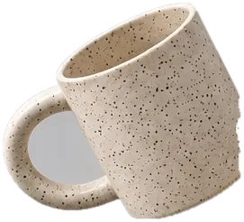
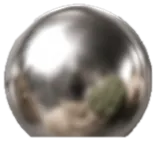
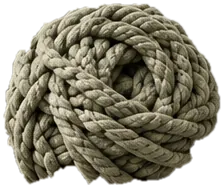
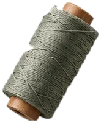
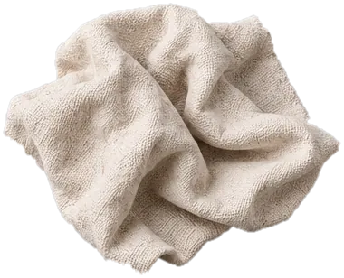
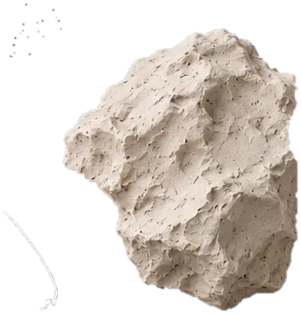
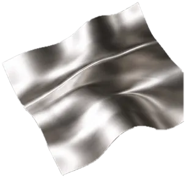
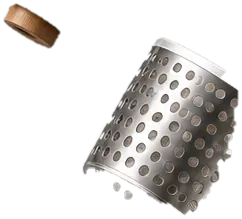
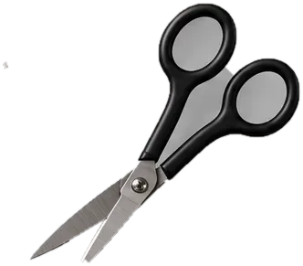
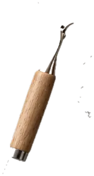
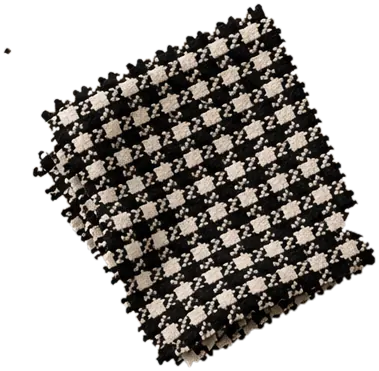
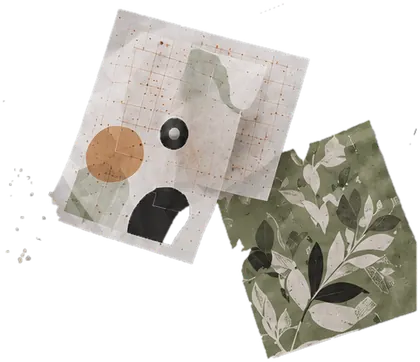
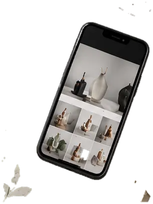
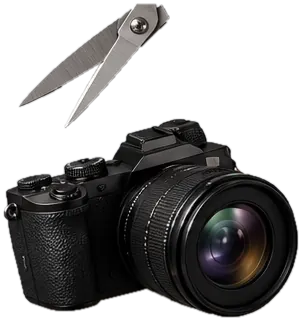
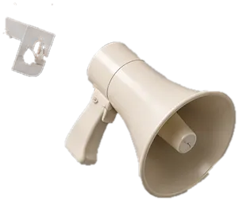
A selection of product, material and brand projects.

↗Independent jewelry brand — from product and identity to market, social and e-commerce experience.
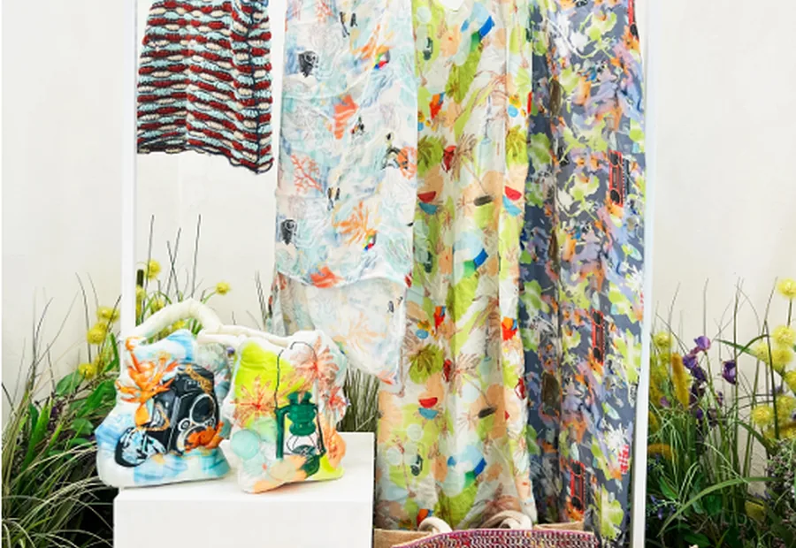
↗A nostalgic picnic world expressed through textile, ceramic, metal and surface pattern design.
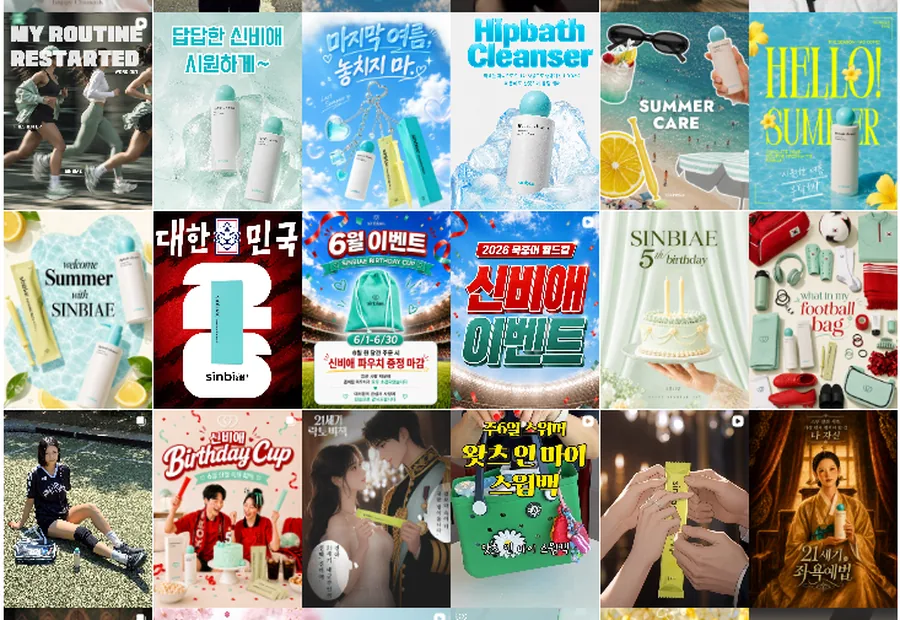
↗Long-term visual communication across social, campaign, CRM, brochure, commerce and creator content.
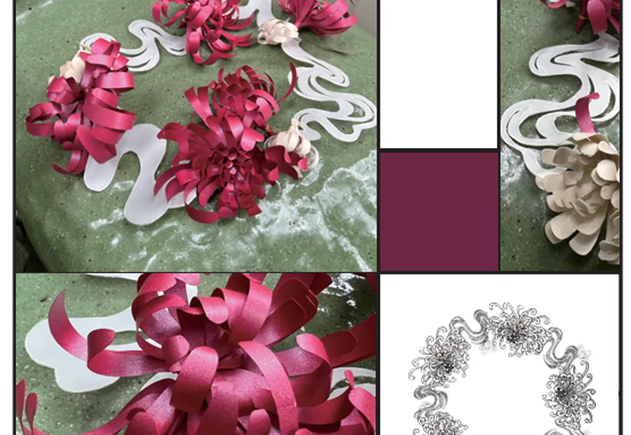
↗Organic floral movement translated into handcrafted metal form through sketch, fabrication and detail.
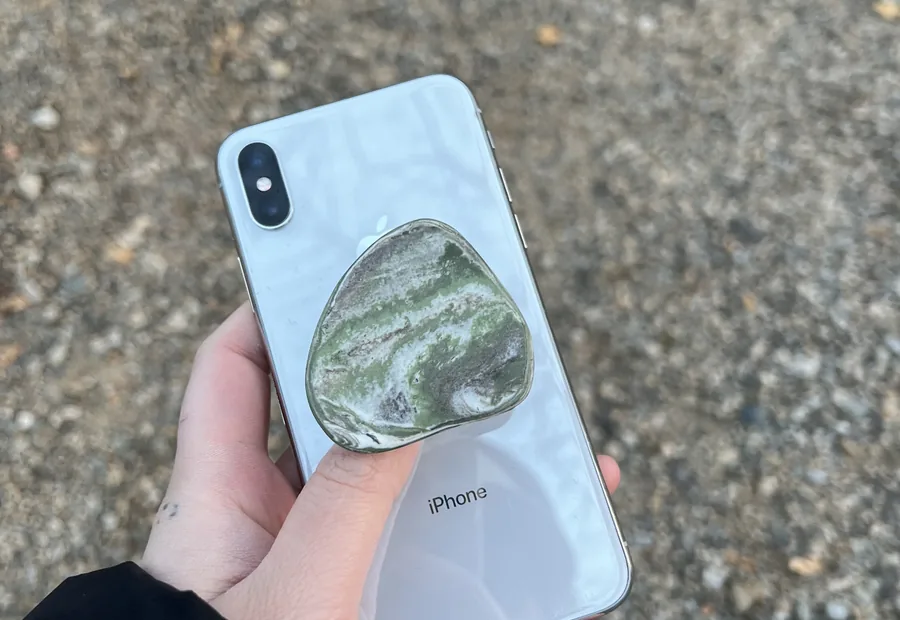
↗A ceramic phone grip inspired by the irregular shape, color and tactility of natural stone.
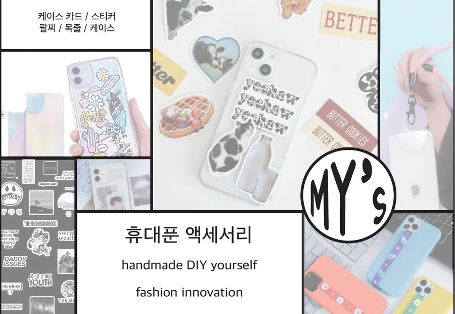
↗A modular phone-accessory brand concept built around personalization and self-expression.
Objects, materials and surfaces — 소재와 형태를 탐구하고 일상의 오브젝트로 확장합니다.
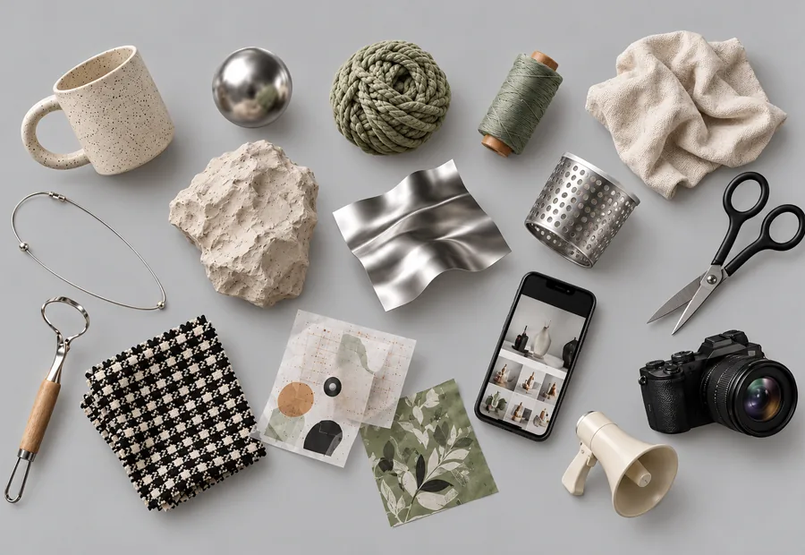
Selected ObjectsMaterial / process / formIdentity, content and experience — 브랜드의 언어를 만들고 다양한 접점으로 확장합니다.
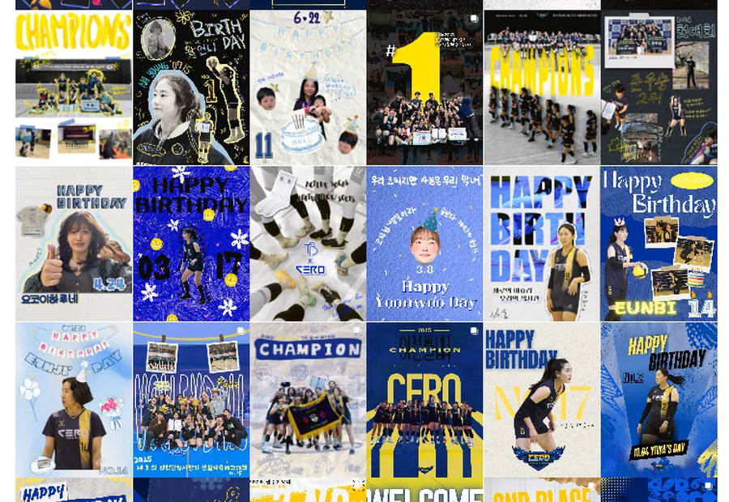
CERO VCSocial identity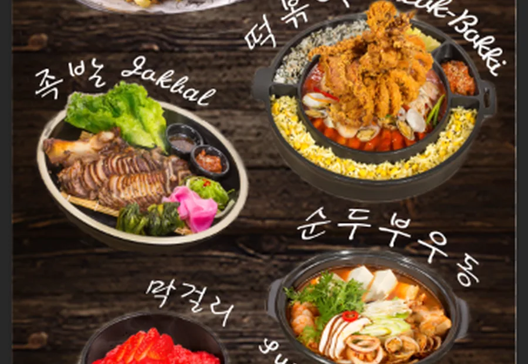
OUTDARKSelected commercial graphics건국대학교 예술디자인대학 리빙디자인학과에서 금속·세라믹·텍스타일·패턴을 공부했습니다. 소재와 형태를 탐구하는 것에서 시작해 제품과 비주얼, 브랜드 콘텐츠까지 디자인 영역을 확장해왔습니다.
I studied Living Design at Konkuk University, exploring metal, ceramic, textile and surface design. My practice has expanded from physical objects and materials into visual communication, branding and content.
Product Design
Metal · Ceramic · Textile
Surface Pattern
Brand Visual · BX
Content Planning · SNS
Campaign Design
Photoshop · Illustrator · InDesign
Premiere Pro · Canva · VLLO
Word · Excel · PowerPoint
Cantonese — Native
Chinese / Mandarin — Fluent
Korean — TOPIK Level 5
English — Basic Communication